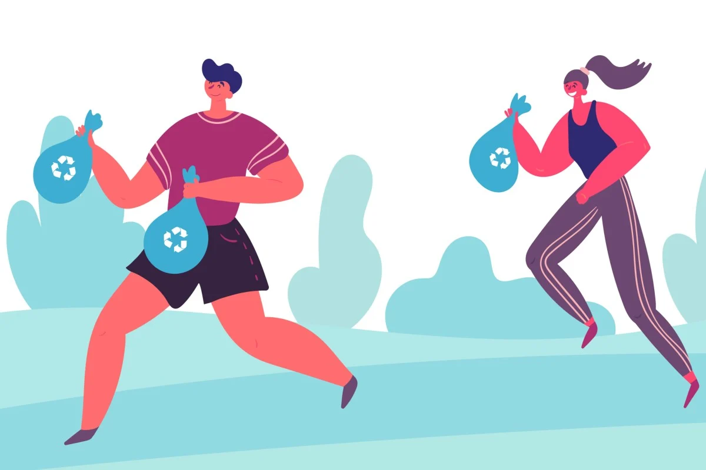

H0PE
JOGGING/HIKINH/PLOGGING PROCESS QUESTIONS
After watching the videos, please answer the process questions.
1. What have you learned?
The video showed the diffrences between running and jogging as well as hike and walk. It also showed what is plogging.
Running and Jogging - Jogging is slower and less intense than running. The main differences are pace and effort. You do jogging to exercise and running to get to a place very fast
Hike and Walk - Hikes are usually last longer and are more physically demanding than walks.
Plogging - Its jogging while collecting trash. Usually this activity is done to clean a certain area and build community.
2. What will I do with what I have learned?
I plan that whenever I have time or whenwver I am jogging, I will also collect trash I so happen to come by.